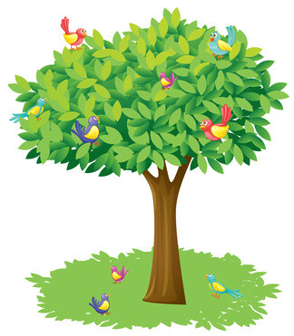

Salon 1"Salón Sol del Amanecer"
Salon 2"Salón Jardín del Mañana"
Salon 3"Salón Cielo Multicolor"

Salon 4"Salon Árbol de la Vida"
Salon 5"Salón Semilla de Vida"

-Acta de nacimiento.
-Cartilla de vacunación.
-Comprobante de domicilio.
-Identificación oficial de los padres o tutores.
-Formato de autorización firmado (que se descarga y se entrega firmado o se firma digitalmente).
1.Completar el formulario en línea con los datos solicitados.
2.Adjuntar digitalmente los documentos requeridos.
3.Realizar el pago de la cuota de inscripción (opcional o según política).
4.Esperar la confirmación de aceptación vía correo electrónico o llamada telefónica.
5.Entregar documentos físicos en el jardín (si se solicita).
En el Jardin A'B'C, contamos con un equipo docente altamente capacitado, comprometido y apasionado por la educación infantil. Nuestros profesores no solo tienen la formación académica necesaria en pedagogía y desarrollo infantil, sino que además poseen una gran sensibilidad y dedicación hacia el cuidado y enseñanza de los niños.
Metodología centrada en el niño: Nuestros docentes trabajan desde un enfoque constructivista. Fomentan la exploración, el pensamiento crítico y la autonomía, creando ambientes de confianza donde los niños se sienten libres para expresarse y aprender .Más allá de la enseñanza académica, nuestros profesores establecen vínculos cálidos y cercanos con los niños, lo que favorece un desarrollo emocional saludable y una mejor disposición para el aprendizaje..
En el Jardin A'B'C hemos diseñado un espacio pensado especialmente para el bienestar, seguridad y desarrollo de los niños. Nuestras instalaciones combinan funcionalidad, comodidad y estímulos pedagógicos para crear un entorno ideal para el aprendizaje y la diversión.
Cada salón está cuidadosamente decorado con colores vivos y elementos temáticos que invitan a la exploración y creatividad. Los espacios son amplios y bien iluminados, con ventilación natural que garantiza un ambiente fresco y saludable. El mobiliario es ergonómico y adaptado a la edad de los niños, con mesas, sillas y estanterías a su altura para fomentar la autonomía. Además, cada salón cuenta con materiales educativos variados, desde juegos didácticos hasta libros y recursos artísticos.
Queremos agradecer sinceramente la confianza que depositan en [Nombre del Jardín] al elegirnos para acompañar a sus hijos en esta etapa tan importante de sus vidas. Nos sentimos honrados de ser parte de su crecimiento, aprendizaje y felicidad.En nuestro jardín, cada niño es único y especial, y trabajamos con dedicación para brindarles un ambiente seguro, amoroso y estimulante donde puedan desarrollarse plenamente. Juntos, familia y educadores, construiremos una experiencia inolvidable que marcará el inicio de un camino lleno de aprendizajes, valores y buenos recuerdos.Gracias por permitirnos ser parte de esta maravillosa aventura educativa. ¡Les damos la más cordial bienvenida a la familia de [Nombre del Jardín]!